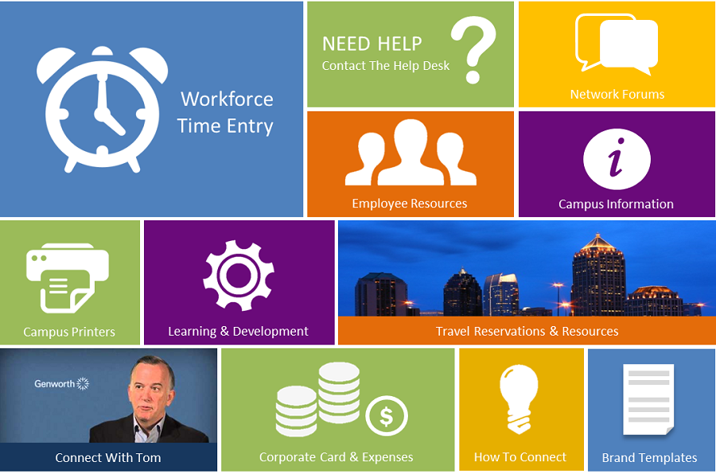

Genworth Financial is a fortune 500 insurance company located in Richmond, VA. In 2014, the IT team introduced a new company-wide Intranet platform that was home to vital employee management tools and resources. However, a majority of users found it difficult to navigate.
Challenge
To understand user motivations & problems in order to design a central intranet directory that allowed for a simple user experience.
User Research
Google Analytics
Using the features of Google Analytics, I was able to identify:
Most visitedlinks/resources on the intranet.
Where users spent the most amount of time.
Observational Study
20+ users observed
30+ hours logged
Method: Held workshops and one-on-one sessions where I observed user frustrations and activities as they explored the platform.
Findings
Users spent 5+ minutes trying to recall memory of desired page locations.
Users were unaware of available help documentation.
Several pages on the intranet contained broken links.
Design

Testing
Method
Using JavaScript, HTML & CSS, I created an interactive prototype of the directory design and observed users in their natural environments as they used the design.
Results
Users felt confident in their abilities to find desired pages/tools.